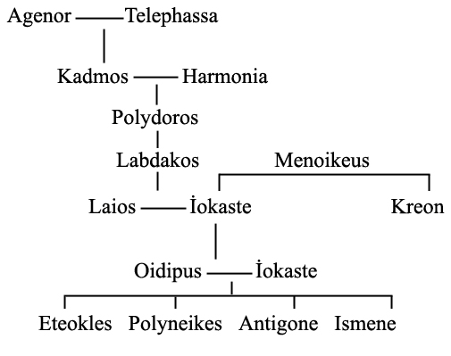

DİPNOTLAR
[1] Tragedyanın bölümleri hakkında ayrıntılı bilgi için bkz. Önsöz, s. 18.
[2] Sunak: Tapınaklarda üzerinde kurban kesilen, günlük yakılan, dini tören yapılan taş masa.
[3] Kadmos: Frikya kralı Agenor’un oğlu, Eurupa’nın erkek kardeşidir. Orta Yunan polis’i Thebai’nin kurucusudur. Thebai kralları hanedanlığı, Oidipus tragedyası bakımından önemli olanları göstermek istersek şöyle bir soyağacına imkân vermektedir:

[4] Yalvarıcılar ellerinde beyaz yün ipliklerle sarılmış defne ya da zeytin dalları taşımaktadırlar.
[5] Günlük: Günlük ağacının kabukları. Bir tür tütsü.
[6] Rahip: Buradaki rahip Hıristiyan manastırlarındaki din bilgini, papaz veya keşiş değil. Tek tanrılı din öncesi, çoktanrılı din adamı, bilgini anlamındadır.
[7] Pallas, tanrıça Athena’nın ritüel sıfatıdır. Efsanelerden bazılarına göre Athena, Olimpos’lu tanrıların Gigant’larla; yani devlerle olan savaşında Pallas’ı öldürüp, derisinden kendine zırh yapar. Bu yüzden de kendisine çoğu kez Pallas Athena, hatta yalnızca Pallas denirdi. Geç döneme ait bir başka efsanede ise tanrı Triton’un kızı olan bir Pallas’tan bahsedilir. Buna göre, Athena ile Pallas birlikte büyümüşler ve Athena onu kazara öldürmüştür. Bunun üzerine de onun adını kendi adının önüne eklemiştir. Dolayısıyla, burada sözü edilen tapınaklar da, Athena Onka ve büyük ihtimalle Athena Kadmeia tapınaklarıdır.
[8] İsmenos nehrinin kaynaklarında Apollon İsmenos Tapınağı bulunuyordu; burada kurbanların külleri kullanılarak kehanetler yapılırdı.
[9] Veba burada ateş taşıyan tanrı ile kişileştirilip özdeşleştiriliyor. Kastedilen muhtemelen savaş ve ölüm tanrısı Ares’tir. (bkz. Sat. 166, 190) Veba her şeyi yakıp yıkan ateş gibi ortalığı kırıp geçiriyor ve insanlara ateşi getiriyor.
[10] Hades: Yunan mitolojisinde Zeus, babası Kronos’u tahttan indirdikten sonra kendisi gökyüzünün, kardeşlerinden Poseidon denizlerin, Hades de yeraltının, yani ölüler dünyasının hâkimi olur. Yine Yunan mitolojisinde, dünyanın bittiği yerden gidilen ölüler dünyası, bkz. Platon, Devlet, 10. Kitap kapanış mitosu. İlkçağ anlatısında değişik tasvirlerle karşımıza çıkar.
[11] “İnsafsız, merhametsiz şarkıcı” bilmecesini manzum biçimde sunan Sfenks’tir (bkz. Sat. 130, 391, 508, 1199). Sfenks’in başı kadın, bedeni ise kanatlı bir aslan biçimindedir. Thebai’de ya da Thebai agorada oturur ve gelip geçene bir bilmece sorar: “Yeryüzünde iki ayağı, dört ayağı ve üç ayağı olan ve tek bir sese sahip bir şey yaşamaktadır, yeryüzünde sürünen, gökte uçan, denizde yüzen bütün canlılar arasında bir tek o biçim değiştirir. Ancak fazla ayaklarını (dört ayağını) kullanarak yürüdüğünde, uzuvları en yavaş hareket eden gene odur, bil bakalım bu nedir?!” Doğru cevap veremeyen Sfenks’in kurbanı olup onun tarafından yutulur. Oidipus doğru cevabı bulur: “İnsanı kastediyorsun,” der; “yeryüzünde bebek olarak önce iki eli ve ayakları üzerinde (dört ayak üzerinde) hareket eder; ancak yaşlanınca iki ayağının yanı sıra bir de üçüncü ayak olarak baston kullanır ve yaşlılık belini büktüğü için neredeyse kafasını bile kaldıramaz.” Bu cevap üzerine Sfenks bir uçuruma atlar ve Thebai kurtulur.
[12] Phoibos’un Pythik evleri: “Parlak” anlamına gelen Phoibos, Yunan mitolojisinde tanrı Apollon’un sıfatı, hatta çoğu kez adı olarak kullanılır. Apollon, Delphoi yakınındaki tapınağı kurmadan önce, oralarda yaşayan, Python adındaki, kehanetlerde bulunan dragonu öldürmüştür. Dolayısıyla “Pythik evler” söz konusu Apollon’un Delphoi’deki kehanet yerleridir..
[13] Tragedyanın bölümleri hakkında ayrıntılı bilgi için bkz. Önsöz, s. 18.
[14] Apollon Zeus’un isteklerini bildiriyor.
[15] Altın tahtlı Phytos: Delphoi (Pythia) hazine evlerinde saklanan altınlarla eskiden beri ünlüydü.
[16] Paian, “iyileştirici” demektir. Homeros ve Hesiodos’ta bu isimli iyileştirme gücü olan bir tanrıdan bahsedilir. Sonradan Apollon da bu adla hekimler tanrısı olarak anılmıştır. Doğum yerinin Delos adası olması nedeniyle kendisine “Delos’lu” deniyor.
[17] Athena: Yunan mitolojisinde baş tanrı Zeus ile Metis’in kızı, bilgelik ve savaş tanrıçası, sanatların koruyucusu, Atina’ya ismini veren kişi ve o şehrin koruyucusu. Metis onu dünyaya getirmek üzereyken Zeus, kendisine söylenen bir kehanet üzerine onu yutar ve doğum zamanı geldiğinde, Hephaistos’un balta ile yardığı Zeus’un başından, tanrıça mızrak ve kalkanıyla, korkunç bir savaş narası atarak dışarı fırlar. Troia Savaşı dahil olmak üzere pek çok kez savaşçı kahramanlara yardım edip yol gösteren Athena, aynı zamanda aklın da tanrıçası sayıldığından bu yardımlar, kaba gücün zekâyla birleşmesini temsil eder. Sanatın ve edebiyatın da koruyucusu olan Athena, savaşçı ruhla zekânın birleşmesidir.
[18] Burada çağrılan üçlü tanrı ve tanrıçalar, Athena, kız kardeşi Artemis ve Apollon’dur, koro şarkısının sonunda çağrılanlar ise Apollon, Artemis ve Dionysos’tur. Kült törenlerinde, yeminlerde ve duada bu son üç adı birlikte anmak âdetti.
[19] Buradaki gece gibi karanlık, tanrı Hades’tir.
[20] Athena.
[21] Ares burada savaş tanrısı olarak değil de, veba hastalığının sebebi ve yayıcısı olarak tanıtılıyor; bunu yapabilmesi için de herhangi bir donanıma ihtiyacı yok.
[22] Ares Atlantik’e doğru kaybolup gitmelidir. (“Amphitrias’ın büyük odasına doğru”) Amphitrias bir deniz tanrıçasıdır ve Poseidon’un karısıdır. Ares’in Karadeniz’e doğru gitmesi de söz konusudur (“Trakya’daki dalgalar girdabına”).
[23] Lykeios, Apollon’un adlarından biridir ve farklı şekillerde açıklanır. Bu sözcük sıklıkla kurtlar (lykos) ile ilintilendirilmiştir; öte yandan içindeki luk (ışık) kökünden dolayı ışık anlamına geldiği de ileri sürülmüştür. Mitolojinin bir versiyonuna göre Apollon ile Artemis’i Zeus’tan doğuran kişi, birinci tanrılar kuşağından Leto’dur. Burada muhtemelen sürülerin koruyucusu Apollon, sürülerin düşmanı “kurda” (Ares) karşı göreve çağrılmaktadır.
[24] Lykia: Fethiye ile Antalya arasındaki bölge.
[25] Bakkhos, şarap ve bağ tanrısı Dionysos’un, daha çok Roma’da kullanılan adıdır. Semele ile Zeus’un oğulları olan Dionysos’un Thebai’li olduğu kabul edilir, dolayısıyla da Thebai onun kentidir.
[26] Mainad’lar, Dionysos yandaşları. Tanrı nereye giderse gitsin peşinden satyr’lerden ve mainad’lardan oluşan bir kalabalık gelirdi.
[27] Burada Oidipus kendisinden öncekilerin çocuksuzluğunu ima ediyor.
[28] Dike, kozmostaki ve devletteki adil ve doğru düzenin kişileştirilmiş halidir; günah ile tövbe arasındaki adil dengenin temsilcisidir. Eunomia’nın (yasallığın) ve Eirene (barışın) yanı sıra üçüncü kahramandır, Zeus ve Themis’in kızlarından biridir.
[29] Atina hukukuna göre Atina’da sürekli kalan ve üst sınıfın haklarından yoksun olan halk (metoikos) kendilerini mahkemede temsil etme yetkisi bulunan bir koruyucuya (prostates) sahip olmak zorundaydılar. Atina’ya yerleşmek isteyen yabancı, bir demot’u, prostates yani korumacı efendisi olarak seçerdi; bu koruyucu, o kişinin belli bir demos’ta, yani evde ikametini kayda alırdı. Sophokles burada kendi döneminin ve doğduğu kentin düzenlemelerini ve kurumlarını Thebai’ye ve geçmişin kahramanlık mitosuna yansıtıyor. Edebiyatta buna anakronizm deniyor. Teiresias şunu söylemek istiyor: “Ben kendi hakları olan bir yurttaşım başka kimseye bağımlı değilim.”
[30] Loksias: Apollon’un adlarından biri daha. “Eğri”, “karanlık” manasına gelebiliyor.
[31] Kithairon: Attika yarımadası ile Boiotya arasında kalan batı dağlarının adı. 1408 metre yüksekliğindeki bu dağlar bugün bile hâlâ ormanlarla kaplıdırlar. Burası Oidipus’un bırakıldığı yerdir.
[32] Parnassos’un dik ve yalçın kayalıklarının (Phaidriaden) eteklerinde Delphoi Apollon tapınağı yer alır. Kaya, Delphis adına işaret etmektedir.
[33] Burada Zeus’un oğlu Apollon’dur. Zeus, isteğini yerine getirdiği için onu alev saçan yıldırımlarıyla donatır.
[34] Ker’ler: “İlyada”da büyük rol oynayan dişi cinler. Genellikle Eriny’lerden ayırt edilemezler, halbuki daha çok savaş ve şiddet sahnelerinde ortaya çıkarlar ve her kahramanı ölümü anında alıp götüren Kader’i temsil ederler. Kanatlı, siyah, iri beyaz dişli, uzun, sivri tırnaklı korkunç varlıklar olarak tasvir edilirler. Cesetleri parçalar, yaralıların ve ölülerin kanlarını içerler. Bununla beraber, özellikle Homeros’un kullandığı deyimlerden, onların her insanla birlikte var olan ve yalnızca ölüm şeklini değil, kısmetine düşen hayat şeklini de temsil eden Kader tanrıçaları (Moira’lar) olarak tasavvur edildiklerini anlıyoruz.
[35] Delphoi sıkça yeryüzünün göbeği (omphalos ges) olarak tanımlanır. Apollon tapınağında duran yüzeyi yer yer düzleşmiş küre biçimli beyaz bir mermer taş çok eski zamandan beri dünyanın merkezi olarak kabul edilmişti.
[36] Labdakid: Kastedilen Labdakos’un oğlu Laios’tur. Koro’nun görüşüne göre Oidipus’un Korinthos’lu olduğu kesindir.
[37] Güneş tanrısı “Helios” bütün tanrılardan önce gelen tanrıdır, çünkü ışığın tanrısı olarak önünde Şafak’ın arabasıyla, doğudan batıya doğru sürdüğü arabasıyla günü başlatır. Gökyüzü hiyerarşisinde en tepede yer alır, “her şeyi görüp işitir.”
[38] “İkisinden de mi” derken sadece Oidipus Kreon’dan şüpheleniyor, ama kendisi bu şüphenin dışında kalıyor. Koro başka sorulara cevap vermekten kaçınıyor.
[39] “Yabancı” yeni bir bilgi. Üç yollu bir kavşak derken, tek bir yolun ikiye ayrılması kastediliyor; çatallaşan yol ve asıl yol, birlikte üç yol oluşturuyorlar.
[40] İokaste Oidipus’un ayaklarının şişmiş olduğu konusunda bir şey söylemiyor.
[41] Delphoi’den Thebai’ye giden yol yaklaşık Delphoi’nin üç kilometre doğusunda ikiye ayrılır; bir yol kuzeydoğudaki Daulia’ya gider. Delphoi ile Daulia yollarının buluştuğu bu çatalda, biri Delphoi’den öteki Thebai’den gelen Oidipus ile Laios karşılaşırlar.
[42] Moira: “Pay”, “ hayattan yoksun”, “kader” anlamına gelir. Başlangıçta her insanın bu dünyadan aldığı pay, onun nasibi anlamına geliyordu. Ancak bu soyutlama giderek somutlaştı ve Moira’lar ellerindeki iplikleri eğirerek ölümlülerin yaşam süresini belirleyen, Atropos, Klotho ve Lakhesis adlı üç tanrıça olarak tasavvur edildi. Yunan dünyasında Zeus dahil hiçbir tanrının karşı çıkamayacağı, herkesin uymak zorunda olduğu evrensel yasayı temsil eden Moira’lar, bir kişinin zamanının geldiğine karar verdiyseler, tanrılar bile o kişiye yardım edemezlerdi.
[43] Koro burada “yüce” (yazılmamış) yasalardan söz ediyor. Tanrılardan gelen bu yasalar ebedidir, bütün insan eseri kuralların üstünde yer alırlar.
[44] Burada söz konusu olan suç (günah) işlenirse, artık hiçbir adil kişi, hatta koro bile kendini hiddetin hedefi olmaktan kurtaramayacaktır. Bu durumda, dansların eşliğinde de olsa, tanrılara yönelik her türlü hizmet ve saygı gösterisinin de anlamı kalmayacaktır, Dionysos adına yazılan ve sahneye koyulan oyunların da artık anlamsızlaşması söz konusu olacaktır.
[45] Abai: Phokis’teki kent; Delphoi’dekinden daha eski olduğu sanılan ünlü bir Apollon kâhini söz konusu olmalı.
[46] Zeus kâhinini ziyaret.
[47] İokaste oyunun başında felaketle baş başa olan kentin “resmi” rituelini tekrarlıyor; orada halk Oidipus’tan yardım istemekteydi; şimdi ise kraliçe İokaste, Oidipus için yardım diliyor.
[48] Yakınımız: Sarayın önünde bir Apollon mihrabı durmaktadır. Apollon mecazi anlamda da “felaket savucusu” ve kehanet tanrısı olarak yakın dost gibi algılanmaktadır.
[49] Haberci, İokaste Oidipus’a çocuklar doğurduğu için, “mademki onun eşi, ona hizmet ediyor...” diyor.
[50] Oidipus: Yunanca’da ‘Oidipous’ şiş ayak anlamına gelir.
[51] Nymphe’ler: Homeros’a göre Zeus’un kızları. En eski efsanelerden başlayarak Hermes ve Pan’a, hatta Apollon’a yakın tanrıçalardır ve Artemis’in maiyetini oluştururlar. Satyr’ler ve Silene’ler Nymphe’lerin erkek karşılığıdırlar ve birlikte Dionysos cemaatini oluştururlar.
[52] Pan: Aslen Arkadhia’lı olan ancak ünü ve kültü bütün Yunanistan’a yayılmış olan, çobanların ve sürülerin tanrısı. Pan genelde yarı insan yarı hayvan şeklinde tasvir edilir. Sakallı, sipsivri çeneli suratında hayvani bir kurnazlık ifadesi yer alır. Alnında iki boynuz vardır. Vücudu kıllı, bacakları teke bacağıdır. Çok hızlı koşar ve çeviktir. Çalılıklarda gizlenmeyi, pınarların serinliklerini ve ormanların kuytu gölgelerini çok sever. Bu anlamda sadece çobanların değil onların sürülerinin de zevkini temsil eder. Büyük seks gücüne sahip olan bu tanrı nymphe’leri ve genç erkekleri aynı tutkuyla kovalar. Genelde Hermes’in oğlu olduğu kabul edilir.
[53] Kyllenei’nin efendisi: Kyllenei, arkadhia’nın kuzeyindeki dağın adıdır. Bugünkü adı Ziria’dır. Mitolojiye göre Hermes bu dağdaki bir mağarada doğduğu için dağ kutsaldır. Dolayısıyla Kyllenei’nin efendisi diye bahsedilen de, haberci tanrı Hermes’tir.
[54] Arktoros, takım yıldızlar içinde eylülde öne çıkan bir yıldız. Bu dize ilkbahardan sonbahara, üç tam yarı yılı kastediyor..
[55] Oidipus korodakileri Thebai’nin tanıkları olarak gösteriyor.
[56] “Çocuk” burada iki anlama geliyor. Köle çocukları da efendilere ait olduğu için, buradaki çocuk bir köle olabilir. Sonraki sorular çobanı iyice sıkıştırınca, artık gerçeği saklayacak bir yolu kalmıyor çobanın.
[57] Tragedyanın bölümleri hakkında ayrıntılı bilgi için bkz. Önsöz, s. 18.
[58] Ister. Tuna nehri.
[59] Phasis: Güneybatı Kafkaslardaki nehir. Yunanlılar çok uzak nehirleri her zaman olduğundan çok daha geniş ve büyük akarsular olarak tasarlamışlardır.
[60] Daimon: İnsanlar üzerinde güç sahibi olan ruhsal, tekinsiz varlıklar.
[61] Teiresias’ın kehaneti gerçekleşmiş oluyor.
[62] Oidipus’un iki oğlu, Eteokles ve Polyneikes henüz çok gençtirler.
[63] Oidipus’un ölümünden önce çekmek zorunda olduğu büyük acıları ima ediyor. Sophokles, “Oidipus Kolonos’ta” tragedyasında bu acıların bitişini anlatır.
[64] Çeşitli uzmanlar bu son bölümün sahte ve ekleme olduğundan emin gibidirler. Orijinal tragedyada kaybolmuş olan ya da istenmeyen bir sonun yerine yazılmış olabilirler.